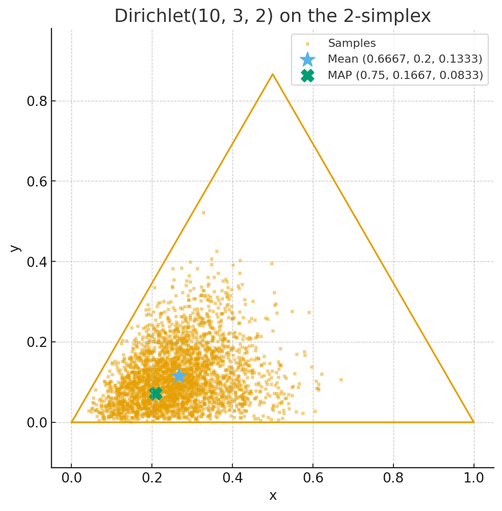

Zichlik taqsimotlari
Zichlik taqsimotlari (probability density distributions) — ehtimollik nazariyasida va statistikada muhim tushuncha bo‘lib, tasodifiy miqdorlarning qanday qiymatlar atrofida ko‘proq to‘planishini ifodalaydi.
Zichlik taqsimot turlari
Diskret taqsimotlar
Tasodifiy miqdor faqat cheklangan yoki sanaladigan qiymatlarni oladi.
Misollar:
Bernulli
Binomial
Geometrik
Poisson
Negativ binomial (Pascal)
Uzluksiz taqsimotlar
Tasodifiy miqdor istalgan haqiqiy qiymatni olishi mumkin.
Misollar:
Normal (Gauss)
Eksponensial
Birlashgan (Uniform)
Gamma
Beta
Kauchy
Log-normal
Maxsus/statistik taqsimotlar
Asosan statistika va testlarda qo‘llaniladi.
Misollar:
\(\chi^2\) (chi-kvadrat)
Student t-taqsimoti
Fisher F-taqsimoti
Ko‘p o‘lchamli (multivariate) taqsimotlar
Bir nechta tasodifiy miqdorlarni birgalikda ifodalaydi.
Misollar:
Ko‘p o‘lchovli normal taqsimot
Multinomial taqsimot
Dirichlet taqsimoti
Zichlik funksiyalari(Density Functions)
PMF (Probability Mass Function – ehtimollik massasi funksiyasi) - diskret taqsimotlar (sanoq bo‘yicha qiymatlar).
PDF (Probability Density Function - ehtimollik zichlik funksiyasi) - uzluksiz taqsimotlar (cheksiz qiymatlar).
Ehtimollik zichlik funksiyasi (PDF)
Ehtimollik zichlik funksiyasi (PDF, Probability Density Function) — bu uzluksiz tasodifiy miqdorning ehtimollik taqsimotini ifodalovchi matematik funksiya.
Agar \(X\) – uzluksiz tasodifiy miqdor bo‘lsa, uning zichlik funksiyasi \(f(x)\) quyidagi xossalarga ega:
Manfiy emaslik sharti:
\[ f(x) \geq 0, \quad \forall x \]Umumiy ehtimollik 1 ga teng:
\[ \int_{-\infty}^{\infty} f(x)\, dx = 1 \]Oraliq ehtimolligi: Tasodifiy miqdor \(X\) oraliq \((a, b)\) ga tushish ehtimoli:
\[ P(a \leq X \leq b) = \int_{a}^{b} f(x)\, dx \]
Gauss (Normal) taqsimot zichligi
Gaus (normal) taqsimot zichligi — bu \(\mu\) o‘rtacha atrofida eng ko‘p to‘plangan va undan uzoqlashgan sari eksponensial tezlikda kamayadigan qo‘ng‘iroqsimon (bell-shaped) ehtimollik zichlik funksiyasi bo‘lib, statistikada eng ko‘p qo‘llaniladigan taqsimotdir.
Zichlik funksiyasi (PDF formulasi):
Agar \(X \sim N(\mu, \sigma^2)\) normal taqsimotga ega bo‘lsa, uning zichlik funksiyasi quyidagicha:
Bu yerda:
\(\mu\) — matematik kutilma (o‘rtacha qiymat)
\(\sigma\) — standart og‘ish - ayni tarqoqlikni asl birlikda ifodalaydi. Amaliy tahlil, grafiklar, odatiy talqin uchun – standart og‘ish qulay.
\(\sigma^2\) — dispersiya - qiymatlarning o‘rtachadan kvadrat og‘ishi. tarqoqlikni kvadrat birlikda o‘lchaydi. Matematik nazariya, formulalar, ML algoritmlar – dispersiya majburiy, chunki u algebraik jihatdan ancha oddiy va qulay.
Asosiy xossalari:
Musbatlik
\[ f(x) \geq 0 \quad \text{barcha } x \text{ lar uchun} \]Normallashganlik. Butun chiziq bo‘ylab integral 1 ga teng:
\[ \int_{-\infty}^{\infty} f(x)\, dx = 1 \]Simmetriklik. Zichlik grafigi \(\mu\) nuqtaga nisbatan simmetrik.
Maksimal qiymat. Zichlikning eng yuqori nuqtasi markazda \(x = \mu\) bo‘lib, qiymati:
\[ f(\mu) = \frac{1}{\sqrt{2\pi}\,\sigma} \]Chegaralar:
Pastki chegara: \(0\) (cheksiz uzoqda nolga intiladi).
Yuqori chegara: \(\dfrac{1}{\sqrt{2\pi}\,\sigma}\) (bu qiymat \(\sigma\) ga bog‘liq).
Standart normal taqsimot
Agar \(\mu = 0\), \(\sigma = 1\) bo‘lsa:
\[ f(x) = \frac{1}{\sqrt{2\pi}} e^{-\frac{x^2}{2}} \]Bu taqsimot standart normal taqsimot yoki Z-taqsimot deb ataladi.
Normal (Gaus) taqsimotning klassik xossasi ma’lumotlarning uchrash extimolligi:
\([\mu - \sigma, \mu + \sigma] \;\; \approx 68.27\%\)
\([\mu - 2\sigma, \mu + 2\sigma] \;\; \approx 95.45\%\)
\([\mu - 3\sigma, \mu + 3\sigma] \;\; \approx 99.73\%\)
Dirichlet taqsimoti
Bu ko‘p o‘lchamli ehtimollik taqsimoti bo‘lib, odatda ko‘p nomli (categorical yoki multinomial) ehtimolliklarni modellashtirish uchun ishlatiladi. U Beta taqsimotining ko‘p o‘lchovli umumlashmasi hisoblanadi. Agar bizda bir nechta kategoriya bo‘lsa (masalan, 3 xil rang: qizil, ko‘k, yashil) va ularning ehtimollari qanday taqsimlanganini modellashtirmoqchi bo‘lsak, Dirichlet taqsimoti shu ehtimollarning tasodifiy taqsimlanishini beradi.
Agar \(K\) o‘lchamli ehtimollik vektori
bo‘lib,
bo‘lsa, \(\mathbf{x}\) Dirichlet taqsimotiga ega deyiladi:
Bu yerda:
\(\alpha = (\alpha_1, \alpha_2, \dots, \alpha_K)\) — parametrlar vektori, \(\alpha_i > 0\)
\(B(\alpha)\) — Beta funksiyasining umumlashgan ko‘rinishi
Asosiy xossalari
Parametrlar ta’siri
\(\alpha_i\) katta bo‘lsa, \(x_i\) kattaroq qiymatlarni olishga moyil bo‘ladi.
\(\alpha_i < 1\) bo‘lsa, taqsimot burchaklarga yaqinlashadi.
\(\alpha_i = 1\) bo‘lsa, taqsimot bir tekis (uniform).
Matematik kutilma
Beta taqsimot bilan aloqasi
\(K=2\) holatda Dirichlet taqsimoti oddiy Beta taqsimotiga teng.
Misol
data = [1, 1, 1, 1, 1, 1, 1, 1, 1, 1, 2, 2, 2, 3, 3] Dirichlet: data = {1×10, 2×3, 3×2}, α = [10, 3, 2]
Bu yerda uchta kategoriya bor (1, 2, 3). Berilgan ro‘yxatdagi sanash natijasida: \(n_1 = 10\), \(n_2 = 3\), \(n_3 = 2\) (jami \(N=15\)).
Dirichlet parametrlari: \(\alpha = (\alpha_1, \alpha_2, \alpha_3) = (10, 3, 2)\),
va \(\alpha_0 = \sum_i \alpha_i = 15\).
\(\alpha\) ni taqsimotning o‘zi sifatida talqin qilish
Agar \(\mathbf{p} = (p_1, p_2, p_3) \sim \mathrm{Dir}(\alpha)\) bo‘lsa:
Kutilma (mean)
\[ \mathbb{E}[p_i] = \frac{\alpha_i}{\alpha_0} = \left(\tfrac{10}{15}, \tfrac{3}{15}, \tfrac{2}{15}\right) = (0.6667, 0.2000, 0.1333). \]MAP (agar \(\alpha_i > 1\))
\[ p_i^{\text{MAP}} = \frac{\alpha_i-1}{\alpha_0-K} = \left(\tfrac{9}{12}, \tfrac{2}{12}, \tfrac{1}{12}\right) = (0.75, 0.1667, 0.0833). \]Dispersiya
\[\begin{split} \mathrm{Var}(p_i) = \frac{\alpha_i(\alpha_0-\alpha_i)}{\alpha_0^2(\alpha_0+1)} \Rightarrow \begin{cases} \mathrm{Var}(p_1)\approx 0.01389 \\ \mathrm{Var}(p_2)\approx 0.01000 \\ \mathrm{Var}(p_3)\approx 0.00722 \end{cases} \end{split}\](Kovariatsiyalar manfiy: \(\mathrm{Cov}(p_i,p_j)=-\frac{\alpha_i\alpha_j}{\alpha_0^2(\alpha_0+1)}\).)
Intuitiv ma’no: \(\alpha\) — “psevdo-hisoblar” (pseudo-counts). \(\alpha_0=15\) katta bo‘lgani sari \(\mathbf{p}\) o‘rtacha atrofida (0.667, 0.2, 0.133) kuchliroq jamlanadi.
Grafik ko‘rinishi
Dirichlet(10, 3, 2) dan olingan 3000 ta namunalar 2-simpleksda (uchburchak) quyidagicha tarqaladi:
⭐ belgisi — kutilma \((0.6667, 0.2000, 0.1333)\)
✖️ belgisi — MAP \((0.75, 0.1667, 0.0833)\)
Nuqtalar — tasodifiy namunalar